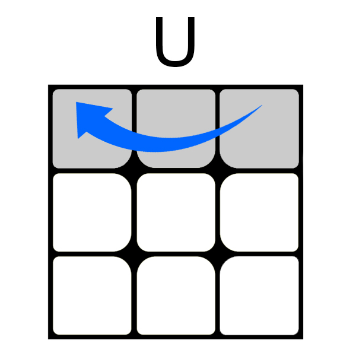
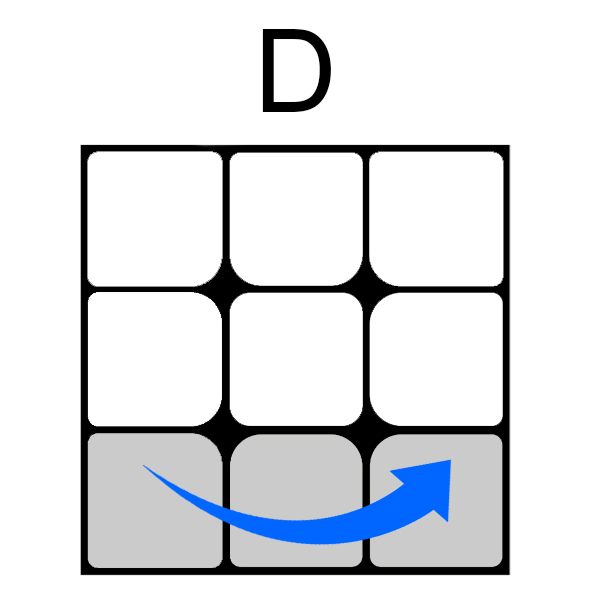
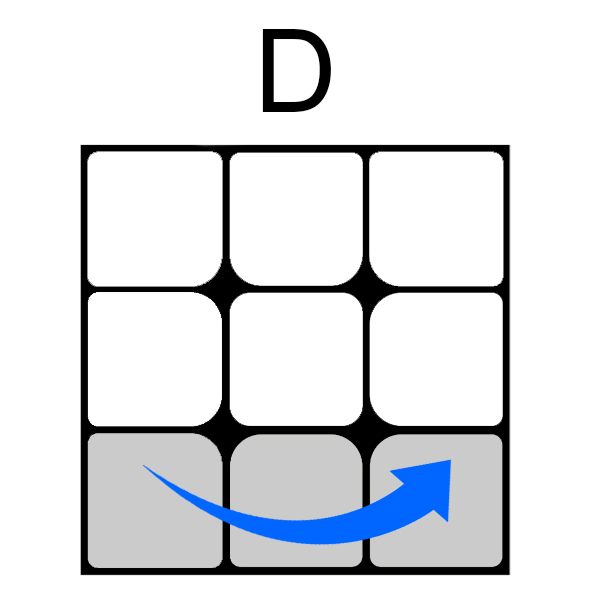
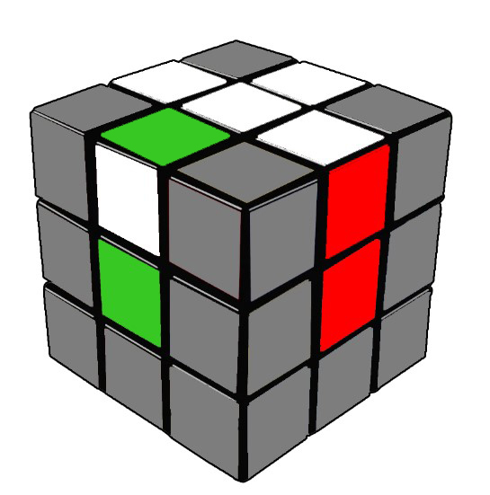
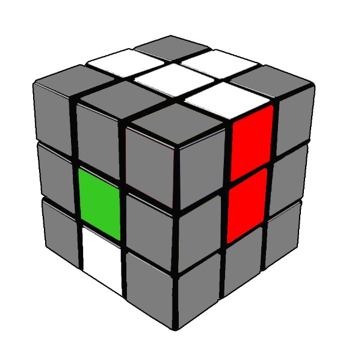
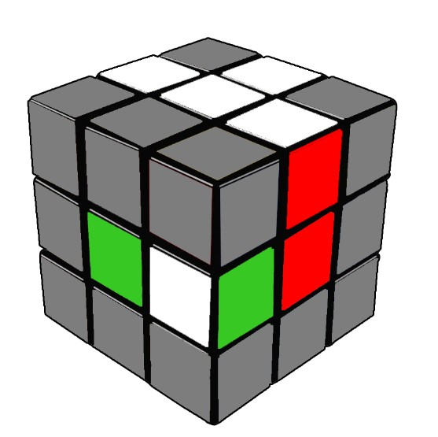

 



Бел Крст
Оваа фаза е интуитивна, нема специфични алгоритми поради тоа што има огромен број различни комбинации кои може да ги имаме.Еве како треба да изгледа еден добро наместен бел крст:
за разлика од еден лошо наместен бел крст

Еве неколку примери кои би можеле да ви помогнат при решавање со цел да дојдете до белиот крст.
1) 2) 3) 4) 5)
Гледајќи ја зелената страна како предна:
Решение на 1: F U' R U
Решение на 2: F' U' R U
Решение на 3: U' R U
Решение на 4: U L' U'
Решение на 5: U' R' U
Ќошиња на прв слој
Овој дел исто така се решава интуитивно, целта е да се најде соодветното ќоше,следно го наместуваме под местото каде што треба да биде, доколку ни се наоѓа на левата страна(L), правиме еден потег D, со што ни го носи на десната страна, ја спуштаме левата страна со потегот L, го враќаме ќошето со D', па со L' го наместуваме на соодветната позиција. Доколку ни е на десна страна, ги правиме чекорите само за спротивната страна: D' R' D R.Во прилог се 3 примери со кои можете да се соочите и нивните решенија.
1) 2) 3)

Гледајќи ја портокаловата страна како предна:
Решение на 1: R' D' R
Решение на 2: F D F'
Решение на 3: F L D2 L' F'
Втор Слој
доколку сите ќошиња ни се наместени на соодветното место, можеме да продолжиме со вториот слој. Овде имаме 2 алгоритми кои ќе ни бидат потребни со цел да преминеме на следната фаза
1) 2) 3)
Решение на 1: U' L' U L U F U' F'
Решение на 2: U R U' R' U' F' U F
Бидејќи ова е грешка наместен дел треба повторно да се искористи алгоритмот од решение 1 или решение 2 зависно од каде ни се наоѓа тој дел. Доколку тој дел се наоѓа на левата страна, го користиме алгоритамот од решение 1, во спротивно го користиме алгориатмот од решение 2
Овде ќе ја гледаме само горната страна на коцката. Со цел полесно да бидат научени дел од алгоритмите, ќе приметите дека поголем дел од нив се повтараат. Со користење на алгоритмите од една состојба, коцката преминува во друга, па иако не го знаете алгоритмот така вие би можеле да стигнете до состојба од која вие знаете да ја решите коцката.
1) 2) 3) 4) 5) 6) 7) 8) 9) 10)
Алгоритмот потребен за 1: f (R U R' U') f'
Алгоритмот потребен за 2: F (R U R' U') F'
Алгоритмот потребен за 3: f (R U R' U') f'
Алгоритмот потребен за 4: F (R U R' U') F'
Алгоритмот потребен за 5: F (R U R' U') F'
Алгоритмот потребен за 6: R U2 R' U' R U' R'
Алгоритмот потребен за 7: f (R U R' U') f'
Алгоритмот потребен за 8: R U2 R' U' R U' R'
Алгоритмот потребен за 9: R U2 R' U' R U' R'
Алгоритмот потребен за 10: R U2 R' U' R U' R' доколку ја добиете истата состојба по извршување, повторете го алгоритмот.
Би можело некои од состојбите да ви се повтараат, но на крај вие би добиле состојба како на сликата:
Сега може да преминеме на следниот чекор, PLL.
1) 2) 3) 4) 5)
Алгоритам за решавање на 1 R U'] [R U] [R U] [R U'] R' U' R2
Алгоритам за решавање на 2 R2 U [R U R' U'] (R' U') (R' U R')
Алгоритам за решавање на 3 M2 U M2 U2 M2 U M2
Алгоритам за решавање на 4 x [(R' U R') D2] [(R U' R') D2] R2
Алгоритам за решавање на 5 x' [(R U' R) D2] [(R' U R) D2] R2
Овде за прв пат се среќавате со нотацијата „x“ која значи ја завртуваме коцката за 90° спротивно од нас, додека пак „x'“, за 90° кон нас.